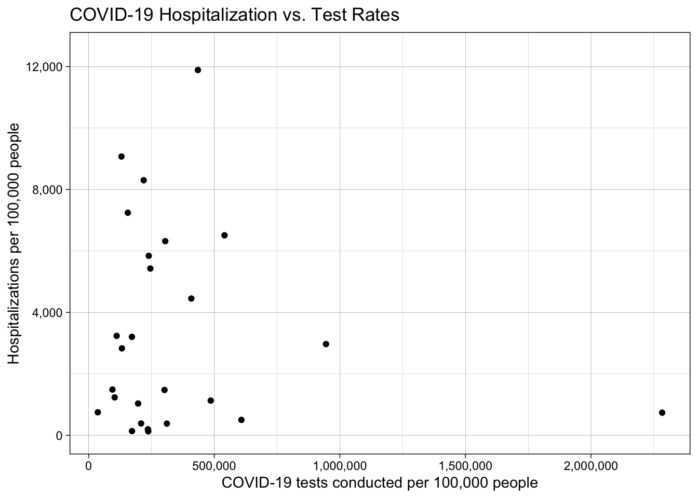
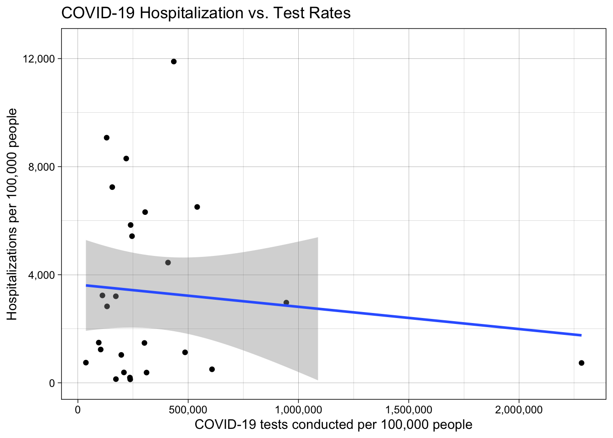
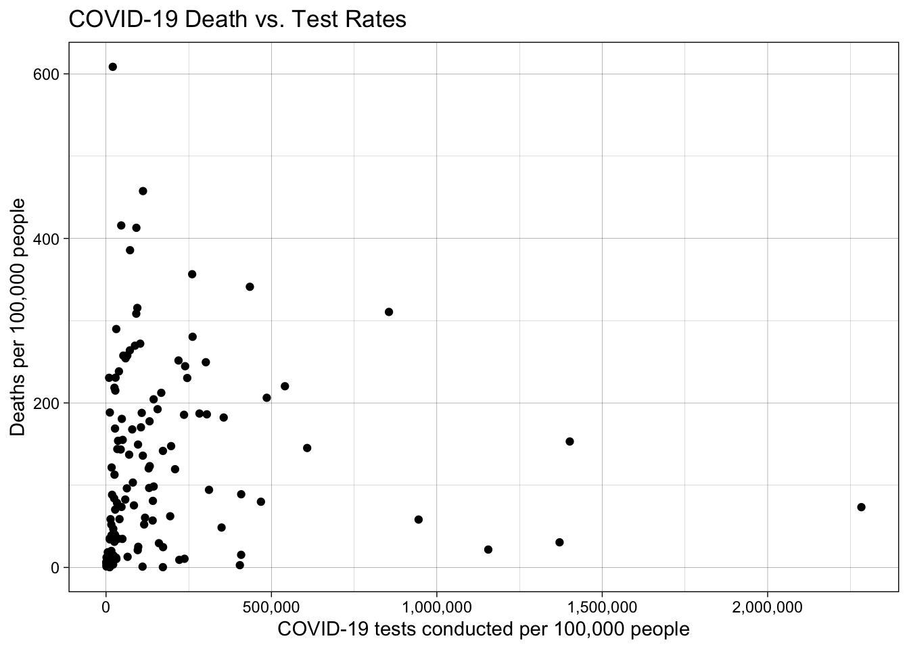
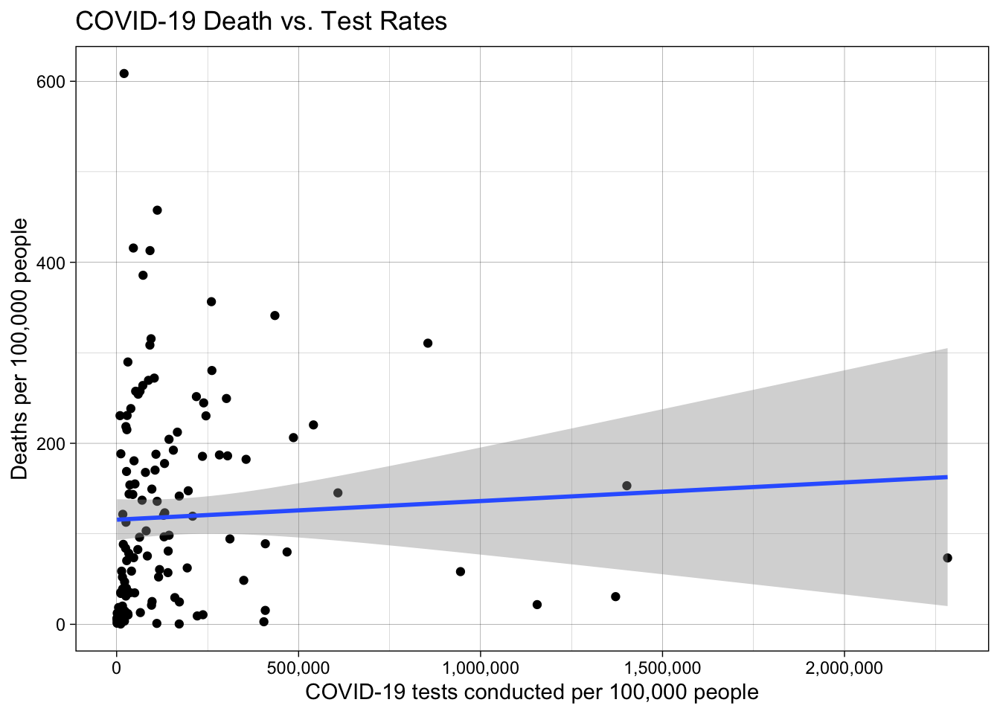

When attempting to minimize adverse health outcomes caused by infectious diseases, testing is an essential tool. Not only does it facilitate the successful treatment of individuals by identifying diseases in their early stages before symptoms and complications arise, it also augments secondary disease prevention by reducing transmission. Ideally, with timely and reliable identification of those who have contracted a disease, their ability to pass the disease on to others can be reduced via measures such as masking, social distancing and, by extension, isolation. Reduced transmission subsequently eases the pressure on hospitals, which struggle with high patient volumes and (at times) staff shortages during pandemics. Moreover, as mentioned above, expansive testing and early detection of diseases also lighten the burden on medical staff and resources by enabling early treatment of the disease. Finally, on a larger scale, governments and other public health organizations benefit from comprehensive testing regimes because they provide data that guides the efficient allocation of limited resources such as medical equipment.
For the reasons outlined above, public health experts agree that testing is a crucial element of infectious disease control. However, while expansive testing is a necessary component of containing outbreaks, it is also insufficient. Rigorous testing alone does not prevent disease transmission, hospitalizations, and deaths. For one, the tests themselves must be valid in terms of their actual ability to accurately distinguish those who have a specific disease from those who do not. Moreover, the insights derived from testing data must be paired with other public health measures in order to reduce the burden of disease. For example, widespread testing may reveal a measles outbreak in a community, but the outbreak will continue to worsen in the absence of subsequent interventions such as immunizations or social distancing. The burden placed on that community’s health system will also intensify if resources and staff are not allocated in such a way that meets the increased demand for health services.
The ongoing COVID-19 pandemic has laid bare the immense challenges of effectively responding to a global infectious disease outbreak. Since emerging in human populations at the end of 2019, the severe acute respiratory syndrome coronavirus 2 (SARS-CoV-2) virus has led to many millions of deaths, hospitalizations, and other adverse health outcomes worldwide. Health systems have been strained like never before. National responses to the pandemic have varied widely and, subsequently, countries around the world have experienced notably different health outcomes stemming from the outbreak.
This project aims to examine various countries’ COVID-19 death and hospitalization numbers relative to the number of COVID-19 tests conducted. The dataset utilized for analysis, which compiles extensive health data from a number of official sources worldwide, is provided by the website Our World in Data (OWID) in the following link: https://github.com/owid/covid-19-data/blob/master/public/data/README.md. Specifically, I use this dataset to evaluate whether testing rates (standardized per 100,000 people) are negatively associated with hospitalizations and deaths (also standardized per 100,000 people), as would be expected by public health experts. In other words, did countries with higher testing rates exhibit lower rates of hospitalizations and deaths than other countries with lower testing rates? Though case numbers are also provided in the dataset, transmission outcomes are not measured in the analysis because case numbers are highly dependent on case detection rates (i.e., the number of detected cases relative to the total number of estimated cases in a population), which vary widely between countries and are very difficult to determine with accuracy.
After importing OWID’s dataset into R, the glimpse() function summarizes the names and types of the information provided in each column as well as the dataset’s dimensions (i.e., the number of rows and columns).
library(readr)
library(tibble)
library(dplyr)
covid_df <- read.csv("owid-covid-data.csv")
glimpse(covid_df)## Rows: 153,393
## Columns: 67
## $ iso_code <fct> AFG, AFG, AFG, AFG, AFG, AF…
## $ continent <fct> Asia, Asia, Asia, Asia, Asi…
## $ location <fct> Afghanistan, Afghanistan, A…
## $ date <fct> 2020-02-24, 2020-02-25, 202…
## $ total_cases <dbl> 5, 5, 5, 5, 5, 5, 5, 5, 5, …
## $ new_cases <dbl> 5, 0, 0, 0, 0, 0, 0, 0, 0, …
## $ new_cases_smoothed <dbl> NA, NA, NA, NA, NA, 0.714, …
## $ total_deaths <dbl> NA, NA, NA, NA, NA, NA, NA,…
## $ new_deaths <dbl> NA, NA, NA, NA, NA, NA, NA,…
## $ new_deaths_smoothed <dbl> NA, NA, NA, NA, NA, NA, NA,…
## $ total_cases_per_million <dbl> 0.126, 0.126, 0.126, 0.126,…
## $ new_cases_per_million <dbl> 0.126, 0.000, 0.000, 0.000,…
## $ new_cases_smoothed_per_million <dbl> NA, NA, NA, NA, NA, 0.018, …
## $ total_deaths_per_million <dbl> NA, NA, NA, NA, NA, NA, NA,…
## $ new_deaths_per_million <dbl> NA, NA, NA, NA, NA, NA, NA,…
## $ new_deaths_smoothed_per_million <dbl> NA, NA, NA, NA, NA, NA, NA,…
## $ reproduction_rate <dbl> NA, NA, NA, NA, NA, NA, NA,…
## $ icu_patients <dbl> NA, NA, NA, NA, NA, NA, NA,…
## $ icu_patients_per_million <dbl> NA, NA, NA, NA, NA, NA, NA,…
## $ hosp_patients <dbl> NA, NA, NA, NA, NA, NA, NA,…
## $ hosp_patients_per_million <dbl> NA, NA, NA, NA, NA, NA, NA,…
## $ weekly_icu_admissions <dbl> NA, NA, NA, NA, NA, NA, NA,…
## $ weekly_icu_admissions_per_million <dbl> NA, NA, NA, NA, NA, NA, NA,…
## $ weekly_hosp_admissions <dbl> NA, NA, NA, NA, NA, NA, NA,…
## $ weekly_hosp_admissions_per_million <dbl> NA, NA, NA, NA, NA, NA, NA,…
## $ new_tests <dbl> NA, NA, NA, NA, NA, NA, NA,…
## $ total_tests <dbl> NA, NA, NA, NA, NA, NA, NA,…
## $ total_tests_per_thousand <dbl> NA, NA, NA, NA, NA, NA, NA,…
## $ new_tests_per_thousand <dbl> NA, NA, NA, NA, NA, NA, NA,…
## $ new_tests_smoothed <dbl> NA, NA, NA, NA, NA, NA, NA,…
## $ new_tests_smoothed_per_thousand <dbl> NA, NA, NA, NA, NA, NA, NA,…
## $ positive_rate <dbl> NA, NA, NA, NA, NA, NA, NA,…
## $ tests_per_case <dbl> NA, NA, NA, NA, NA, NA, NA,…
## $ tests_units <fct> , , , , , , , , , , , , , ,…
## $ total_vaccinations <dbl> NA, NA, NA, NA, NA, NA, NA,…
## $ people_vaccinated <dbl> NA, NA, NA, NA, NA, NA, NA,…
## $ people_fully_vaccinated <dbl> NA, NA, NA, NA, NA, NA, NA,…
## $ total_boosters <dbl> NA, NA, NA, NA, NA, NA, NA,…
## $ new_vaccinations <dbl> NA, NA, NA, NA, NA, NA, NA,…
## $ new_vaccinations_smoothed <dbl> NA, NA, NA, NA, NA, NA, NA,…
## $ total_vaccinations_per_hundred <dbl> NA, NA, NA, NA, NA, NA, NA,…
## $ people_vaccinated_per_hundred <dbl> NA, NA, NA, NA, NA, NA, NA,…
## $ people_fully_vaccinated_per_hundred <dbl> NA, NA, NA, NA, NA, NA, NA,…
## $ total_boosters_per_hundred <dbl> NA, NA, NA, NA, NA, NA, NA,…
## $ new_vaccinations_smoothed_per_million <dbl> NA, NA, NA, NA, NA, NA, NA,…
## $ new_people_vaccinated_smoothed <dbl> NA, NA, NA, NA, NA, NA, NA,…
## $ new_people_vaccinated_smoothed_per_hundred <dbl> NA, NA, NA, NA, NA, NA, NA,…
## $ stringency_index <dbl> 8.33, 8.33, 8.33, 8.33, 8.3…
## $ population <dbl> 39835428, 39835428, 3983542…
## $ population_density <dbl> 54.422, 54.422, 54.422, 54.…
## $ median_age <dbl> 18.6, 18.6, 18.6, 18.6, 18.…
## $ aged_65_older <dbl> 2.581, 2.581, 2.581, 2.581,…
## $ aged_70_older <dbl> 1.337, 1.337, 1.337, 1.337,…
## $ gdp_per_capita <dbl> 1803.987, 1803.987, 1803.98…
## $ extreme_poverty <dbl> NA, NA, NA, NA, NA, NA, NA,…
## $ cardiovasc_death_rate <dbl> 597.029, 597.029, 597.029, …
## $ diabetes_prevalence <dbl> 9.59, 9.59, 9.59, 9.59, 9.5…
## $ female_smokers <dbl> NA, NA, NA, NA, NA, NA, NA,…
## $ male_smokers <dbl> NA, NA, NA, NA, NA, NA, NA,…
## $ handwashing_facilities <dbl> 37.746, 37.746, 37.746, 37.…
## $ hospital_beds_per_thousand <dbl> 0.5, 0.5, 0.5, 0.5, 0.5, 0.…
## $ life_expectancy <dbl> 64.83, 64.83, 64.83, 64.83,…
## $ human_development_index <dbl> 0.511, 0.511, 0.511, 0.511,…
## $ excess_mortality_cumulative_absolute <dbl> NA, NA, NA, NA, NA, NA, NA,…
## $ excess_mortality_cumulative <dbl> NA, NA, NA, NA, NA, NA, NA,…
## $ excess_mortality <dbl> NA, NA, NA, NA, NA, NA, NA,…
## $ excess_mortality_cumulative_per_million <dbl> NA, NA, NA, NA, NA, NA, NA,…As you can see, the dataset supplies many informative indicators of health outcomes related to the COVID-19 outbreak; in total, there are 67 variables measured in 153,393 observations. For the purposes of answering this project’s question of whether increased testing is associated with lower death and hospitalization rates, only a handful of the 67 variables are necessary.
Therefore, a new dataframe is created that only selects for the relevant columns in the original covid_df dataset: country (location), date of the recorded data (date), total tests completed up to that point in time (total_tests), weekly hospital admissions (weekly_hosp_admissions), total deaths recorded up to that point in time (total_deaths), and population size (population).
covid_select_df <- covid_df %>%
select(location, date, total_tests, weekly_hosp_admissions, total_deaths, population)
glimpse(covid_select_df)## Rows: 153,393
## Columns: 6
## $ location <fct> Afghanistan, Afghanistan, Afghanistan, Afghanis…
## $ date <fct> 2020-02-24, 2020-02-25, 2020-02-26, 2020-02-27,…
## $ total_tests <dbl> NA, NA, NA, NA, NA, NA, NA, NA, NA, NA, NA, NA,…
## $ weekly_hosp_admissions <dbl> NA, NA, NA, NA, NA, NA, NA, NA, NA, NA, NA, NA,…
## $ total_deaths <dbl> NA, NA, NA, NA, NA, NA, NA, NA, NA, NA, NA, NA,…
## $ population <dbl> 39835428, 39835428, 39835428, 39835428, 3983542…This new covid_select_df dataframe is easier to work with now that we have removed the information that is irrelevant to this particular project. The next step is to transform the data in such a way that allows us to answer the research question. Before doing that, though, we must examine the population values in the dataset closely, as they are instrumental in our calculations of tests per 100,000 people, hospitalizations per 100,000 people, and deaths per 100,000 people. Therefore, it is important to confirm that each country’s population is held constant in the dataset such that the population values are not fluctuating over time. We can do this by using the group_by function to organize the dataset by country and then counting the number of different population values (using the unique() function) provided for each country over the course of the dataset. These numbers are calculated and shown in the testing_population_numbers_df dataframe:
testing_population_numbers_df <- covid_df %>%
group_by(location) %>%
summarise(unique_population_numbers = length(unique(population)))
glimpse(testing_population_numbers_df)## Rows: 238
## Columns: 2
## $ location <fct> Afghanistan, Africa, Albania, Algeria, Andor…
## $ unique_population_numbers <int> 1, 1, 1, 1, 1, 1, 1, 1, 1, 1, 1, 1, 1, 1, 1,…unique(testing_population_numbers_df$unique_population_numbers) ## [1] 1#confirms there is only 1 unique population value for each country in the dataset The code confirms that each country’s population is held constant throughout the dataset, so we move on to next steps.
To make our modified dataframe easier to interpret, we proceed to change the name of the location column to country in covid_select_df.
names(covid_select_df)[names(covid_select_df) == "location"] <- "country"
glimpse(covid_select_df)## Rows: 153,393
## Columns: 6
## $ country <fct> Afghanistan, Afghanistan, Afghanistan, Afghanis…
## $ date <fct> 2020-02-24, 2020-02-25, 2020-02-26, 2020-02-27,…
## $ total_tests <dbl> NA, NA, NA, NA, NA, NA, NA, NA, NA, NA, NA, NA,…
## $ weekly_hosp_admissions <dbl> NA, NA, NA, NA, NA, NA, NA, NA, NA, NA, NA, NA,…
## $ total_deaths <dbl> NA, NA, NA, NA, NA, NA, NA, NA, NA, NA, NA, NA,…
## $ population <dbl> 39835428, 39835428, 39835428, 39835428, 3983542…Now we move on to transforming the data in such a way that enables us to perform the statistical analyses necessary to answer our research question. Once again, we turn to the group_by() function, and then we use the summarise function to calculate new values based on the data in covid_select_df.
covid_select_df$date <- as.Date(covid_select_df$date)
#formats the date variable so that the min() and max() functions can be used on it to derive
#the earliest and latest dates in which data was recorded
country_summaries_df <- covid_select_df %>%
group_by(country) %>%
summarise(earliest_date = min(date),
#to get a sense of when each country started providing COVID-19 data
latest_date = max(date),
#to get a sense of how up to date the OWID dataset is
population_estimate = population[date == earliest_date],
tests_total = max(total_tests, na.rm = TRUE),
deaths_total = max(total_deaths, na.rm = TRUE),
hospitalizations_total = sum(weekly_hosp_admissions, na.rm = TRUE))
#na.rm = TRUE removes missing data points
glimpse(country_summaries_df)## Rows: 238
## Columns: 7
## $ country <fct> Afghanistan, Africa, Albania, Algeria, Andorra,…
## $ earliest_date <date> 2020-02-24, 2020-02-13, 2020-02-25, 2020-02-25…
## $ latest_date <date> 2022-01-09, 2022-01-09, 2022-01-09, 2022-01-09…
## $ population_estimate <dbl> 39835428, 1373486472, 2872934, 44616626, 77354,…
## $ tests_total <dbl> -Inf, -Inf, 737014, -Inf, 275127, -Inf, -Inf, 1…
## $ deaths_total <dbl> 7373, 230874, 3240, 6339, 141, 1826, 6, 120, 11…
## $ hospitalizations_total <dbl> 0, 0, 0, 0, 0, 0, 0, 0, 0, 0, 0, 0, 0, 0, 0, 0,…As you can see in this preview of the new country_summaries_df dataframe, the data needs to be cleaned further in preparation for statistical analyses.
First, looking at the values listed in the country column, it appears that some of the countries are, in fact, continents. This research is interested in examining the possible associations between testing rates and death and hospitalization rates at the country level, though, not at the continent level. Thus, we want to remove the observations that provide data on the continent level. We do this by first reviewing all of the unique values listed in the country column using the unique() function:
unique(country_summaries_df$country)## [1] Afghanistan Africa
## [3] Albania Algeria
## [5] Andorra Angola
## [7] Anguilla Antigua and Barbuda
## [9] Argentina Armenia
## [11] Aruba Asia
## [13] Australia Austria
## [15] Azerbaijan Bahamas
## [17] Bahrain Bangladesh
## [19] Barbados Belarus
## [21] Belgium Belize
## [23] Benin Bermuda
## [25] Bhutan Bolivia
## [27] Bonaire Sint Eustatius and Saba Bosnia and Herzegovina
## [29] Botswana Brazil
## [31] British Virgin Islands Brunei
## [33] Bulgaria Burkina Faso
## [35] Burundi Cambodia
## [37] Cameroon Canada
## [39] Cape Verde Cayman Islands
## [41] Central African Republic Chad
## [43] Chile China
## [45] Colombia Comoros
## [47] Congo Cook Islands
## [49] Costa Rica Cote d'Ivoire
## [51] Croatia Cuba
## [53] Curacao Cyprus
## [55] Czechia Democratic Republic of Congo
## [57] Denmark Djibouti
## [59] Dominica Dominican Republic
## [61] Ecuador Egypt
## [63] El Salvador Equatorial Guinea
## [65] Eritrea Estonia
## [67] Eswatini Ethiopia
## [69] Europe European Union
## [71] Faeroe Islands Falkland Islands
## [73] Fiji Finland
## [75] France French Polynesia
## [77] Gabon Gambia
## [79] Georgia Germany
## [81] Ghana Gibraltar
## [83] Greece Greenland
## [85] Grenada Guatemala
## [87] Guernsey Guinea
## [89] Guinea-Bissau Guyana
## [91] Haiti High income
## [93] Honduras Hong Kong
## [95] Hungary Iceland
## [97] India Indonesia
## [99] International Iran
## [101] Iraq Ireland
## [103] Isle of Man Israel
## [105] Italy Jamaica
## [107] Japan Jersey
## [109] Jordan Kazakhstan
## [111] Kenya Kiribati
## [113] Kosovo Kuwait
## [115] Kyrgyzstan Laos
## [117] Latvia Lebanon
## [119] Lesotho Liberia
## [121] Libya Liechtenstein
## [123] Lithuania Low income
## [125] Lower middle income Luxembourg
## [127] Macao Madagascar
## [129] Malawi Malaysia
## [131] Maldives Mali
## [133] Malta Marshall Islands
## [135] Mauritania Mauritius
## [137] Mexico Micronesia (country)
## [139] Moldova Monaco
## [141] Mongolia Montenegro
## [143] Montserrat Morocco
## [145] Mozambique Myanmar
## [147] Namibia Nauru
## [149] Nepal Netherlands
## [151] New Caledonia New Zealand
## [153] Nicaragua Niger
## [155] Nigeria Niue
## [157] North America North Macedonia
## [159] Northern Cyprus Norway
## [161] Oceania Oman
## [163] Pakistan Palau
## [165] Palestine Panama
## [167] Papua New Guinea Paraguay
## [169] Peru Philippines
## [171] Pitcairn Poland
## [173] Portugal Qatar
## [175] Romania Russia
## [177] Rwanda Saint Helena
## [179] Saint Kitts and Nevis Saint Lucia
## [181] Saint Pierre and Miquelon Saint Vincent and the Grenadines
## [183] Samoa San Marino
## [185] Sao Tome and Principe Saudi Arabia
## [187] Senegal Serbia
## [189] Seychelles Sierra Leone
## [191] Singapore Sint Maarten (Dutch part)
## [193] Slovakia Slovenia
## [195] Solomon Islands Somalia
## [197] South Africa South America
## [199] South Korea South Sudan
## [201] Spain Sri Lanka
## [203] Sudan Suriname
## [205] Sweden Switzerland
## [207] Syria Taiwan
## [209] Tajikistan Tanzania
## [211] Thailand Timor
## [213] Togo Tokelau
## [215] Tonga Trinidad and Tobago
## [217] Tunisia Turkey
## [219] Turkmenistan Turks and Caicos Islands
## [221] Tuvalu Uganda
## [223] Ukraine United Arab Emirates
## [225] United Kingdom United States
## [227] Upper middle income Uruguay
## [229] Uzbekistan Vanuatu
## [231] Vatican Venezuela
## [233] Vietnam Wallis and Futuna
## [235] World Yemen
## [237] Zambia Zimbabwe
## 238 Levels: Afghanistan Africa Albania Algeria Andorra Angola ... Zimbabwe# the 238 levels listed at the bottom of the output refer to the original number of
# unique countries with observations in the datasetLooking at this list of unique countries that are listed in the dataset, we can see that five are actually continents: Africa, North America, South America, Asia, Europe, and Australia. Fortunately, Australia is also its own country, so we do not need to remove its data, but we will need to remove the data for the other 5 continents. We do so using the subset() function:
country_summaries_df <- country_summaries_df %>%
subset(country != "Africa" &
country != "Asia" &
country != "Europe" &
country != "North America" &
country != "South America")
glimpse(country_summaries_df)## Rows: 233
## Columns: 7
## $ country <fct> Afghanistan, Albania, Algeria, Andorra, Angola,…
## $ earliest_date <date> 2020-02-24, 2020-02-25, 2020-02-25, 2020-03-02…
## $ latest_date <date> 2022-01-09, 2022-01-09, 2022-01-09, 2022-01-09…
## $ population_estimate <dbl> 39835428, 2872934, 44616626, 77354, 33933611, 1…
## $ tests_total <dbl> -Inf, 737014, -Inf, 275127, -Inf, -Inf, 16700, …
## $ deaths_total <dbl> 7373, 3240, 6339, 141, 1826, 6, 120, 117492, 80…
## $ hospitalizations_total <dbl> 0, 0, 0, 0, 0, 0, 0, 0, 0, 0, 0, 0, 0, 0, 0, 0,…Next, we observe that several of the values in the tests_totalcolumn, which were calculated by taking the maximum value of each country’s total_tests column in the covid_select_df dataframe, are listed as -Inf. This indicates that every single value in that country’s total_tests column is listed as NA. Without any testing data provided from those countries, we must remove them from our analyses, which we can accomplish using the filter() function:
country_summaries_df <- country_summaries_df %>%
filter(tests_total != -Inf)
glimpse(country_summaries_df)## Rows: 135
## Columns: 7
## $ country <fct> Albania, Andorra, Antigua and Barbuda, Argentin…
## $ earliest_date <date> 2020-02-25, 2020-03-02, 2020-03-13, 2020-01-01…
## $ latest_date <date> 2022-01-09, 2022-01-09, 2022-01-09, 2022-01-09…
## $ population_estimate <dbl> 2872934, 77354, 98728, 45605823, 2968128, 25788…
## $ tests_total <dbl> 737014, 275127, 16700, 29303102, 2594856, 57116…
## $ deaths_total <dbl> 3240, 141, 120, 117492, 8001, 2387, 13848, 8445…
## $ hospitalizations_total <dbl> 0, 0, 0, 0, 0, 0, 0, 0, 0, 0, 0, 0, 679440, 0, …Now all countries in the country_summaries_df dataframe have testing data to work with.
However, several of the countries remaining in the dataframe have values of 0 in the hospitalizations_total column. We will have to remove those countries from analysis of the possible association between testing rates and hospitalizations. We must be careful, though, not to remove those countries necessarily from the analysis of the possible association between testing rates and deaths, as some of the countries with zero hospitalizations could still report deaths. The only remaining countries which we can safely remove from the prospective analysis with good reason are those, if any, that have reported zero hospitalizations and zero deaths. We search for countries that fit this criteria using the which() function:
which(country_summaries_df$deaths_total == 0 &
country_summaries_df$hospitalizations_total == 0)## integer(0)The code output reveals that there are no such countries remaining in the country_summaries_df dataframe that report zero hospitalizations and zero deaths. Therefore, we can now move on to our statistical analyses.
The last step in preparing for statistical analyses is to transform the existing dataframe by calculating new values to reflect testing, hospitalization, and death rates standardised for population size. In other words, to answer our research questions of whether increased testing is associated with lower deaths and hospitalizations, we must take into account the fact that the various countries examined in the dataset have population sizes which range widely. Therefore, to establish figures that allow for relevant comparisons between countries, we will standardise tests, hospitalizations, and deaths per 100,000 people, which is common practice in the public health field. Additionally, we will create two separate dataframes from the original country_summaries_df dataframe so that, in the analysis of each outcome variable (hospitalizations and deaths), those countries who reported either zero hospitalizations or zero deaths can be removed while not affecting the country’s inclusion in the analysis of the other outcome variable, which we know does not measure as zero because we’ve just confirmed that no remaining countries report zero hospitalizations and zero deaths.
hospitalizations_tests_df <- country_summaries_df %>%
select(-deaths_total) %>%
filter(hospitalizations_total != 0) %>%
mutate(tests_per_100k = (tests_total / population_estimate) * 100000,
hospitalizations_per_100k = (hospitalizations_total /
population_estimate) * 100000)
deaths_tests_df <- country_summaries_df %>%
select(-hospitalizations_total) %>%
filter(deaths_total != 0) %>%
mutate(tests_per_100k = (tests_total / population_estimate) * 100000,
deaths_per_100k = (deaths_total / population_estimate) * 100000)For the purposes of answering our research question of whether countries with higher testing rates are associated with lower hospitalization and death rates, we will generate scatterplots to visualise the data using the ggplot2 package in R. Then, after visualising the data, we will conduct simple linear regression modelling to test whether there is a linear relationship between the two outcome variables and test rates. First, we take a look at the plot of hospitalizations versus test rates.
library(ggplot2)
library(scales)
#hospitalizations vs. test rates
ggplot(data = hospitalizations_tests_df,
mapping = aes(x = tests_per_100k, y = hospitalizations_per_100k)) +
geom_point() +
labs(x = "COVID-19 tests conducted per 100,000 people",
y = "Hospitalizations per 100,000 people",
title = "COVID-19 Hospitalization vs. Test Rates ") +
theme(text = element_text(size = 10)) +
theme_bw() +
theme_linedraw() +
scale_x_continuous(labels = comma) +
scale_y_continuous(labels = comma, limits = c(0, 12500))
The plot does not show any discernible association between test rates and hospitalization rates. To drive this home further, we try fitting a best fit linear regression line to the plot to see how well such a model would fit the data:
ggplot(data = hospitalizations_tests_df,
mapping = aes(x = tests_per_100k, y = hospitalizations_per_100k)) +
geom_point() +
labs(x = "COVID-19 tests conducted per 100,000 people",
y = "Hospitalizations per 100,000 people",
title = "COVID-19 Hospitalization vs. Test Rates ") +
theme(text = element_text(size = 10)) +
theme_bw() +
theme_linedraw() +
scale_x_continuous(labels = comma) +
scale_y_continuous(labels = comma, limits = c(0, 12500)) +
geom_smooth(method = "lm") 
As the best fit linear regression line underscores, a linear model does not fit the observed data with reasonable accuracy. The results of linear regression analysis also confirm this:
hospitalizations_lm <- lm(hospitalizations_per_100k ~
tests_per_100k, data = hospitalizations_tests_df)
summary(hospitalizations_lm)##
## Call:
## lm(formula = hospitalizations_per_100k ~ tests_per_100k, data = hospitalizations_tests_df)
##
## Residuals:
## Min 1Q Median 3Q Max
## -3357.1 -2586.2 -860.2 2300.7 8613.7
##
## Coefficients:
## Estimate Std. Error t value Pr(>|t|)
## (Intercept) 3.635e+03 8.478e+02 4.287 0.000254 ***
## tests_per_100k -8.222e-04 1.514e-03 -0.543 0.592105
## ---
## Signif. codes: 0 '***' 0.001 '**' 0.01 '*' 0.05 '.' 0.1 ' ' 1
##
## Residual standard error: 3322 on 24 degrees of freedom
## Multiple R-squared: 0.01214, Adjusted R-squared: -0.02902
## F-statistic: 0.2949 on 1 and 24 DF, p-value: 0.5921The p-value (listed as Pr(>|t|)) is interpreted as the probability that the calculated coefficient for the tests_per_100k variable could be derived in a random sample if the null hypothesis — which states that there is no linear relationship between test rates and death rates — was true. The fact that the p-value is 0.59, much greater than the standard criteria of p<0.05 for declaring findings significant, leads us to accept the null hypothesis. Moreover, the multiple R-square value of 0.01 means that only 1% of the variation in hospitalization rates can be accounted for in the linear regression model; the remaining 99% of the variation may be caused by a multitude of other factors.
Consequently, the data does not support the idea that higher test rates are associated with lower hospitalization rates. In fact, there doesn’t appear to be any observable relationship between the two variables at all. We could try fitting other types of models to the data such as polynomial models or nonlinear models but, when looking at the actual data distribution, it is fairly clear that testing rates are not a good predictor of hospitalization rates. Furthermore, we have no reason to expect the relationship between the two variables to be anything but linear. The possible implications of this finding are discussed below, but first we must also take a look at the data on test rates versus death rates:
ggplot(data = deaths_tests_df,
mapping = aes(x = tests_per_100k, y = deaths_per_100k)) +
geom_point() +
labs(x = "COVID-19 tests conducted per 100,000 people",
y = "Deaths per 100,000 people",
title = "COVID-19 Death vs. Test Rates") +
theme(text = element_text(size = 10)) +
theme_bw() +
theme_linedraw() +
scale_x_continuous(labels = comma) +
scale_y_continuous(labels = comma)  Once again, the scatterplot of our predictor variable (tests conducted per 100,000 people) versus our outcome variable (deaths per 100,000 people) does not reveal any clear, discernible relationship between the two variables. Plotting the best fit linear regression line to the data further confirms this observation:
ggplot(data = deaths_tests_df,
mapping = aes(x = tests_per_100k, y = deaths_per_100k)) +
geom_point() +
labs(x = "COVID-19 tests conducted per 100,000 people",
y = "Deaths per 100,000 people",
title = "COVID-19 Death vs. Test Rates") +
theme(text = element_text(size = 10)) +
theme_bw() +
theme_linedraw() +
scale_x_continuous(labels = comma) +
scale_y_continuous(labels = comma) +
geom_smooth(method = "lm")
The statistical results of the linear regression modelling also confirm our observations of the plotted data:
deaths_lm <- lm(deaths_per_100k ~ tests_per_100k, data = deaths_tests_df)
summary(deaths_lm)##
## Call:
## lm(formula = deaths_per_100k ~ tests_per_100k, data = deaths_tests_df)
##
## Residuals:
## Min 1Q Median 3Q Max
## -121.10 -100.14 -35.00 67.92 492.57
##
## Coefficients:
## Estimate Std. Error t value Pr(>|t|)
## (Intercept) 1.156e+02 1.143e+01 10.115 <2e-16 ***
## tests_per_100k 2.061e-05 3.363e-05 0.613 0.541
## ---
## Signif. codes: 0 '***' 0.001 '**' 0.01 '*' 0.05 '.' 0.1 ' ' 1
##
## Residual standard error: 116.7 on 133 degrees of freedom
## Multiple R-squared: 0.002814, Adjusted R-squared: -0.004684
## F-statistic: 0.3753 on 1 and 133 DF, p-value: 0.5412Yet again, the p-value of the regression coefficient for the tests_per_100k variable as well as the multiple R-squared value confirm that the null hypothesis is true: there is no linear relationship between test rates and death rates.
One could look at the data analyses detailed above and conclude that, perhaps, testing is not as useful in reducing adverse health outcomes in a pandemic as public health experts believe. However, that conclusion is likely incorrect for several reasons. For one, testing has been repeatedly found to be an invaluable tool in controlling infectious disease outbreaks in the past 50 years. It is impossible to know the true extent of a disease’s spread and its potential to infect more people without identifying which people have it. With this in mind, a more nuanced interpretation of the data would be to conclude that the efficacy of testing is highly influenced by other the manner in which testing regimes are conducted as well as other mediating factors.
There are a number of different strategies for administering widespread testing in a pandemic, and all strategies are not equal. Though the quantity of tests conducted is important, what is most essential is that tests be targeted effectively at populations which are most likely to be infected. Scattershot testing administered indiscriminately can lead to extensive waste of limited resources. Test supplies and laboratory infrastructure can be unnecessarily exhausted if testing is not carried out judiciously, based on evidence-based predictions of which populations are most likely to experience an outbreak. Additionally, testing regimes may be hamstrung by the quality of tests and laboratory infrastructure that is available. For example, we know that some COVID-19 tests are more valid — meaning able to distinguish individuals who have a disease from those who do not — than others. Cost and supply chain issues are just two examples of the many factors that can influence the quality of tests used by a given country.
Even when the best, most strategic and targeted testing regimes are implemented with valid tests, other variables can still have major impacts on the outcomes achieved. The beneficial effects of successful testing protocols can easily be reversed by poor decisions made in other areas. For example, a country with the most advanced testing program can easily experience devastating death and hospitalization rates if the disease is very infectious and no other mitigation measures such as masking, social distancing, quarantines, or lockdowns are implemented earnestly in conjunction with testing. Treatment of the disease could also be quite poor in comparison to other health systems. In total, there are countless mediating factors which could prevent an otherwise effective testing regime from achieving lower hospitalization and death rates.
While the data does not merit dismissing the efficacy of widespread testing, it is nonetheless notable that testing rates were not a predictor of hospitalization or death rates. We do not know the exact combination of mediating factors that would cause this, but it is apparent that testing is just one variable of many that can influence the effectiveness of a country’s pandemic response. Future research could look at a number of other relevant variables (e.g., vaccination rates, days spent in lockdown, or population density) alongside testing rates in multiple regression modelling to determine which factors might be associated with hospitalization and death rates.